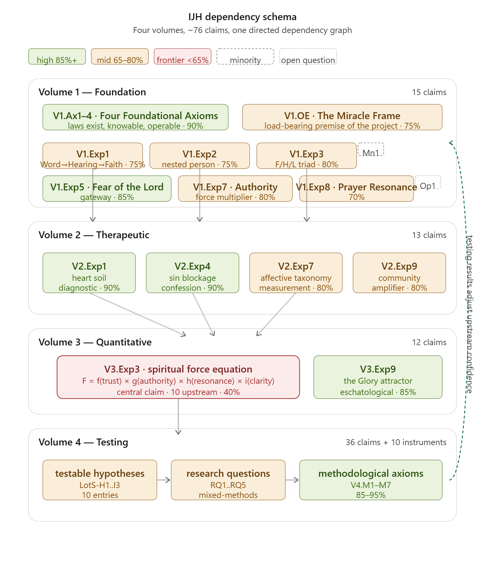
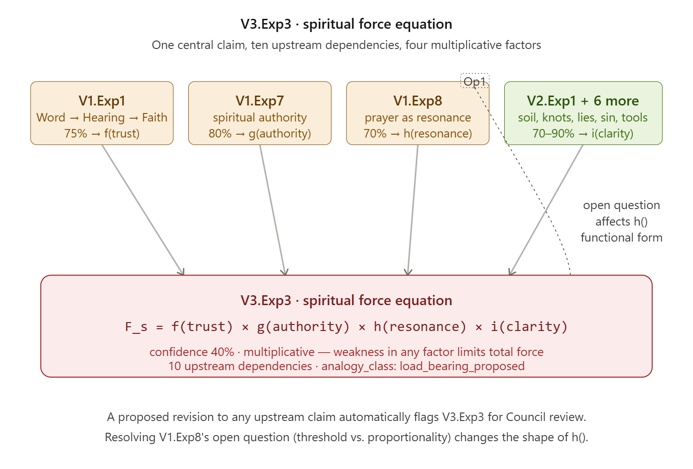

Volume 6: Governance.
Governance Framework for the Intentional Journey of the Heart.
Where Volumes 1–5 are my personal record of what I believe the Lord has shown me, Volume 6 is the governance framework under which this work is stewarded, extended, refined, and, where necessary, corrected by others.
It contains the governance model itself, the Council paper introducing the body that will steward the work, the succession letter, and the proposal template. The claim registry (vol1-claims.yml through vol4-claims.yml) and a dependency diagram showing how the claims relate live alongside it in the repository.
I wrote Volume 6 in a more institutional voice on purpose. It is meant to outlast me and serve people who will come to this work long after I am gone. The Council of Stewards it describes is how this record stays honest once it is no longer just me keeping it honest.
Governance Model
Three-tier organizational structure. A machine-readable claim registry. Tier-based governance. A council that hands its founder's veto back to itself within five years.
§Preface to this revision
This document revises the governance model originally drafted before the four-volume schema conversion. That conversion — producing the claim registry files vol1-claims.yml through vol4-claims.yml, together encoding seventy-six claims, six preserved minority dissents and open questions, and roughly one hundred and fifty dependency edges — surfaced specific structural features the original model could not anticipate. Three founding documents were also drafted in the same pass: CONTRIBUTING.md, SUCCESSION_LETTER.md, and PROPOSAL_TEMPLATE.md. This revision integrates what the registry actually contains, what the conversion revealed, and what the drafted contributor documents already commit the project to.
The core architecture of the original model holds. What changed is in the details: how the schema must flex to accommodate Volume 4's different structure; how confidence tiers should receive differentiated governance treatment; how the analogy-class discipline from Volume 3 applies corpus-wide; how the bidirectional dependency between testing and earlier volumes should shape review cycles; and how the Council's first concrete actions should be ordered given that the registry already exists.
§1Organizational structure
IJH is governed by a three-tier structure during the founder's active tenure, collapsing to two tiers thereafter. This section is substantively unchanged from the original model.
Founder / Editor-in-Chief Tier 1 · John G. Tittle
The founder retains final editorial authority during his active tenure, exercising it sparingly and in public. A codified founder's veto sunsets upon the founder stepping down or incapacity, with the veto then held by the Theological Successor for five additional years, after which the Council becomes fully self-governing. This transition is formalized in the drafted Succession Letter (SUCCESSION_LETTER.md), which names both a Literary Executor (administrative authority) and a Theological Successor (editorial authority), and which allows but does not require the two roles to be held by the same person.
Council of Stewards Tier 2 · 5 members
Five seats, two-year staggered terms. No more than two members from any single denomination, seminary, or publisher, to protect cross-tradition commitment. As a starting proposal, not a mandate, one seat designated for each of the four tradition streams the work draws from (Reformed, Evangelical, Charismatic, Mystical), with a fifth at-large seat held initially by the founder himself. Three seats rotate in odd years, two in even.
Contributor body Tier 3
Anyone may submit proposed refinements using PROPOSAL_TEMPLATE.md. A subset of active contributors — defined as those who have had at least three substantive contributions accepted across at least two volumes over eighteen months — become Recognized Contributors whose names appear in the project masthead and who vote in Council elections once the founder's veto sunsets.
§2The claim registry
The registry is the authoritative record of what the project currently believes and at what confidence level. It exists in four files, one per volume (Volume 5 is a bibliography and does not need schema conversion). The files are the substantive output of the governance work done to date.
76 claims · 3 minorities · 3 open questions
Four volumes form a dependency pyramid rather than four independent works. A change anywhere in the graph has visible consequences elsewhere.
| Volume | Claims | Minorities | Open Q's | Confidence range |
|---|---|---|---|---|
| Vol 1 — Foundation | 15 | 1 | 0 | Working & anchor |
| Vol 3 — Quantitative | 12 | 1 | 2 | Frontier, working & anchor |
| Vol 4 — Testing | 36 (+10 instruments) | 1 | 0 | Anchor + inherited |
| Total | 76 | 3 | 3 | — |
Every claim entry carries: a unique ID, canonical text, confidence percentage (or explicit null for claims whose confidence inherits from upstream), scripture references, external sources, upstream dependencies, downstream dependents, open questions, flip conditions, and — where relevant — minority positions attached as child entries. The full specification is in the registry files themselves; this section summarizes what the Council is responsible for stewarding.
What the registry reveals about the corpus's shape. The four volumes form a dependency pyramid rather than four independent works. Volume 1's four foundational axioms feed into everything. Volume 2 operationalizes Volume 1 for therapeutic use. Volume 3 attempts quantitative formalization, with its central equation (V3.Exp3) drawing on ten specific upstream claims from Volumes 1 and 2. Volume 4 closes the loop by providing empirical tests that feed results back to adjust earlier confidence ratings. A change anywhere in the graph has visible consequences elsewhere — which is precisely the structural feature the governance must steward.
The four .yml files (one for each of the first four volumes) are maintained as governance maintenance documents. A sample diagram and discussion of dependency relationships follows.
IJH Sample Dependency Diagram v2
Given the scope (76 claims, 4 volumes, multiple dependency types), here are two diagrams: an overview showing the schema's structure, and a detailed view of the single most dependency-rich claim as a worked example. Here's the overview first.

Now the detail view — showing how the schema's fan-in structure works for the single most dependency-rich claim in the corpus, V3.Exp3 (the spiritual force equation). This is what a Council member should look at when deciding whether to approve a change to any of its upstream claims. Two things worth saying about these:

What the overview shows. Each volume is color-coded to represent its dominant confidence tier, but that's a simplification — the real data is the mix. Volume 1 is mostly working-tier with two anchor-tier claims (the axioms and Fear of the Lord). Volume 2 anchors two claims (Heart Soil and Sin Blockage) and works outward from there. Volume 3 is the odd one: most of its claims sit in the working tier or below, with the V3.Exp3 equation in the middle as a frontier proposition, and V3.Exp9 (Glory Attractor) pulled up to anchor tier as the eschatological anchor. Volume 4 shows the bidirectional arrow — the only one in the diagram that runs upward — because testing results flow back to adjust the confidence tier on everything above it. That feedback loop is the governance model's heartbeat.
What the detail shows. The second diagram is a worked example of what the schema buys you at governance time. A Council member considering a proposal to refine V1.Exp8 (Prayer Resonance, currently working tier) can see immediately — not by reading prose, but by looking at the dependency graph — that the change propagates into V3.Exp3's h() factor. And because V3.Exp3 is multiplicative, a confidence shift in h() doesn't just shift one factor; it shifts the whole equation. That cascade is the thing the schema was built to make visible. The dotted connector on the right shows the second linkage: V1.Exp8's open question (the Mustard Seed threshold-vs-proportionality problem) specifically affects the functional form of h(), not just its confidence. Resolving that question is a prerequisite for the equation to take a specific testable shape.
Both diagrams deliberately omit a lot. Full-resolution dependency graphs for all 76 claims would be unreadable at this scale and wouldn't serve the visual's purpose, which is to make the schema's logic intuitive at a glance, not to catalog every edge. The authoritative graph lives in the YAML files; these diagrams are the map, not the territory.
One practical use for these: if we ever need to explain to a prospective Council member (or a publisher) what this project actually is, showing them the overview and then walking through the V3.Exp3 example will probably land faster than describing it in words. The visuals make the claim that this is a structured, inspectable, governable body of work much harder to wave away than prose can.
§3Schema extensibility
Volumes 1 through 3 share the "Proposed Law + Certainty %" structure; Volume 4 does not. It contains methodological principles, testable hypotheses, research questions, protocols, and open trails that the original schema did not anticipate. Rather than forcing this material into a box it did not fit, the Volume 4 conversion introduced five new type values: methodological_principle, testable_hypothesis, research_question, protocol, and open_trail. A sixth category — instruments — holds measurement tools as reference material outside the claim list entirely, since instruments are not propositions the Council would vote on.
The extension rule: a proposed new claim type requires explicit Council ratification. The proponent must show that no existing type fits — not that the new type is slightly more convenient. Every new type added to the schema itself becomes a governance-amendment-level change requiring two-thirds supermajority.
Volume 4's extensions pass this test: methodological principles are genuinely not claims-about-the-world but claims-about-how-to-test-claims, and treating them identically would have collapsed an important distinction. Future material added to the project (a sixth volume, a derivative commentary, a cross-tradition dialogue series) may require further extensions. The schema is a living artifact; it is not frozen.
A companion discipline: the schema definition itself (SCHEMA.md in the repository, to be drafted as an early Council priority) is governed under the same two-thirds supermajority rule as the constitution. CI validation should reject any claim entry that does not conform to the current schema. This prevents schema drift from accumulating silently as contributors add entries in idiosyncratic formats.
§4Contribution process
Every proposed refinement is submitted using PROPOSAL_TEMPLATE.md. The template is structured to enforce the four-factor confidence test at the platform level: proposals that leave any of sections 3a through 3d blank are returned for strengthening rather than reviewed. This discipline — which the founder has been using implicitly for over two decades — is now a hard requirement for any contributor who wants to affect the canonical record.
Workflow (summarized)
- The contributor identifies the target claim by ID, copies
PROPOSAL_TEMPLATE.md, and fills every section. - Submission opens a 14-day open comment period visible to all Recognized Contributors.
- After day 14, the Council issues one of four decisions: accept and merge; accept as preserved minority; reject with written reasons preserved; or escalate to the dissent-resolution protocol.
One addition from the conversion experience. Every proposal now also triggers an automated downstream-impact report. The registry's dependency graph is machine-readable, so the Council's tooling can generate — for any target claim — the full list of downstream claims affected, with their current confidence levels and whether they would need review. The proposer is responsible for engaging with each downstream claim in Section 4 of the template; the tooling is responsible for ensuring none are missed.
Contributor onboarding. The drafted CONTRIBUTING.md is the first file a new contributor reads. It sets the voice of the project (contemplative rather than software-paced; correction without contempt; preservation of dissent rather than erasure) and establishes the practical mechanics. The Council should resist the pressure to make this document longer as exceptions arise. A one-page contributor guide that actually gets read is worth more than a ten-page policy that doesn't.
§5Confidence-tier governance
The registry reveals a three-tier confidence structure that the original governance model did not differentiate but should. Different tiers warrant different Council treatment.
Tier 1 — Anchor claims
Tier 1
structural backbone of the corpus
The four axioms, the Fear of the Lord gateway, the Sin Blockage law, the Heart Soil diagnostic, the Obedience Channel, the Glory Attractor, and V4.M3 Disconfirmability (pending ratification).
Tier 2 — Working claims
Tier 2
the majority of the corpus
The majority of the corpus lives here. These are the claims the project actively refines, contests, and tests.
Tier 3 — Frontier claims
Tier 3
research-program track
V3.Exp3 (Spiritual Force equation), V3.Exp6 (Conservation Laws), V3.Exp8 (Miracles as threshold events) — and the preserved open questions attached to other claims — occupy frontier territory.
This tiering is not a hierarchy of importance — V3.Exp6 is arguably more important to the project's long-term ambitions than many Tier 2 claims — but a hierarchy of maturity. It governs pace, not priority.
§6Decision-making framework
Lazy consensus governs routine editorial work (typo fixes, citation corrections). Seven-day silence equals approval.
Consent-based approval governs substantive Tier 2 changes, minority admissions, and confidence adjustments within a tier. A proposal passes when no Council member objects within 14 days and a quorum of four is engaged.
Two-thirds supermajority is reserved for governance amendments, Council membership changes, schema extensions (see §3), Tier 1 anchor claim revisions, and any change to the four foundational axioms.
New provision: research-program track for Tier 3 frontier claims. Revision requires one Council member to sponsor the proposal into the track, and a minimum six-month active-testing window before the Council votes. This prevents frontier claims from being moved by rhetoric alone.
Every body remains answerable to another body. Council members are answerable to Recognized Contributors via a no-confidence mechanism (any contributor may initiate; two seconds trigger a 30-day rectification window). The founder is answerable to the Council through the sunset clause. No role is unaccountable.
The open spiritual-authority question. This governance model describes the internal structure through which the Council orders its own work, but it does not by itself answer the question of the broad-brush spiritual authority to which the whole body — founder, Council, and Recognized Contributors together — is itself answerable. That question is actively under discernment and is named explicitly in Part 2 (The Council), Part IV (Answerability). Readers of this governance document should understand that the Tier 1–Tier 2–Tier 3 structure above does not foreclose the resolution of that prior question; it describes the internal ordering that holds while the prior question is being discerned, and it is expected to be revisited as part of the body's response to whatever spiritual authority is clarified.
§7Disagreement resolution
The three-tag claim schema (canonical, minority, open) is the design specification for handling durable disagreement. Its details remain as in the original model. Three refinements from the conversion experience:
Minority dissents distinguished from open questions. A preserved minority (e.g., V1.Exp3.Mn1, the Hope → Love arrow dissent) is a competing position that the Council has declined to adopt but whose argument deserves permanent preservation. An open question (e.g., V1.Exp8's Mustard Seed question, V3.Exp6.Open1's Noether application) is a sub-question the Council has declined to resolve. The types serve different purposes: minorities preserve alternative readings; open questions preserve unresolved inquiry. Both are first-class content, not footnotes. The registry tracks them separately.
Framework dissent versus claim dissent. V3.Exp2.Mn1 (the Reformed-minimalist caution against adopting TFT as Volume 3's framework) is qualitatively different from V1.Exp3.Mn1 (an alternative reading of a specific claim). Framework dissents are harder to resolve because they have no single locus to argue about; they surface repeatedly as the framework is deployed against specific questions. The Council should track framework dissents with particular care and revisit them on a fixed cadence (annually, minimum) rather than only when challenged.
Path preservation formalized. When a canonical claim is revised, the prior version is demoted to minority status (tagged formerly_canonical) with its full argument preserved, not deleted. Downstream claims that cite the old version are auto-flagged for Council review. This discipline is what distinguishes a living tradition from a series of overwrites; the schema now enforces it mechanically.
§8The analogy-class discipline
Volume 3's conversion introduced a field the original model did not anticipate but which applies corpus-wide: every claim that uses a physical analogy (prayer as resonance, emotional knots as local minima, spiritual force as multiplicative) should be explicitly tagged as illustrative or load_bearing_proposed. An illustrative analogy helps the reader see the shape of a spiritual relationship by pointing to a physical one with similar structure; a load-bearing analogy claims the spiritual law has the same mathematical form as the physical law, precise enough to derive specific predictions. Most of the analogies in the corpus are illustrative. A handful are proposed as load-bearing.
The tag makes the drift visible and requires a deliberate Council vote to convert an analogy's class upward. A load-bearing analogy claim must be ratified by two-thirds supermajority (per §6), because it is effectively a claim that a piece of physics also applies to spiritual dynamics. That is not a decision to make by drift.
Volume 3 established the discipline; the Council should extend it backward across Volumes 1 and 2 during the first ratification pass. Most Vol 1 and Vol 2 claims will be tagged illustrative with little controversy; a small number will require conversation.
§9Testing and bidirectional dependency
Volume 4's relationship to Volumes 1–3 is bidirectional in a way that routine dependency graphs do not capture. The registry handles this correctly — every V4 testable hypothesis (V4.LotS-H1 through V4.LotS-I3) inherits its confidence from a specific V1 or V2 claim via the confidence_inherited_from field — but the governance implications warrant an explicit provision.
Testing results flow upward to adjust earlier confidence ratings. When a Vol 4 research cycle produces data on (say) RQ1, and that data bears on V2.Exp7's Affective Taxonomy hypothesis, the Council's task is to revise V2.Exp7's confidence level up or down according to what the data showed. This is not a routine refinement; it is an evidence-driven calibration. The Council should hold one scheduled calibration cycle per year — a focused meeting in which Vol 4 data from the prior cycle is reviewed and upstream confidence ratings are formally adjusted.
What evidence counts, and what doesn't. The disconfirmability requirement (V4.M3, Tier 1 anchor) governs this. A proposed confidence adjustment upward requires evidence consistent with the claim's stated disconfirming conditions not being met. A proposed adjustment downward requires evidence that would have been specified in the original claim's flip_conditions field. Ad hoc confidence adjustments unsupported by disconfirmability-compliant evidence are not permitted — they would collapse the project into impressions without discipline.
The Council's reporting obligation. After each calibration cycle, the Council publishes a calibration report listing which claims had confidence adjusted, by how much, and on the basis of what evidence. This report is appended to the project's public record. A pattern of unjustified confidence inflation across calibration cycles would itself be grounds for a no-confidence motion against the Council.
§10Licensing
Unchanged from the original model: CC BY 4.0 for the corpus, Developer Certificate of Origin (DCO) for contributions. The drafted CONTRIBUTING.md establishes this commitment as part of the contributor agreement. The Council should resist pressure to change it — CC BY-ND would destroy translation and adaptation; CC BY-NC would eject the project from open-scholarship commons; bespoke "ministry" licenses have anti-model precedents (the NET Bible and the ESV are cautionary examples).
§11Platform
Unchanged from the original model: GitHub for source, Quarto for rendering, Zenodo for preservation with DOIs, Hypothesis for public annotation. The YAML-claim-per-entry structure is now proven to work across all four volumes; no platform change is indicated.
The early recruitment of a technical co-maintainer (the "research software engineer" role) remains a project priority. The registry is machine-readable, but someone has to maintain the validators, generate the downstream-impact reports for Council review, and keep the continuous-integration pipeline green. This role should not fall on the Theological Successor.
§12Succession planning
Unchanged in structure from the original model; the drafted SUCCESSION_LETTER.md implements Year 0–1 of the staged plan. The letter has six decision points the founder must fill in at signing: primary and alternate names for Literary Executor and Theological Successor, signing date, and reference to the broader will.
The staged transition
- Year 0–1. Succession Letter signed, notarized, and held in triplicate (signer's papers, successors' copies, project repository). Council seats recruited.
- Year 1–3. Council seated by founder invitation.
GOVERNANCE.md(this document, ratified) committed to the repository. Co-editors credited publicly. - Year 3–5. Founder's veto sunsets. Fiscal sponsor engaged (Wabash Center, a sympathetic seminary board, or a community foundation — not a denominational publisher). Governance and fiscal oversight kept structurally separate.
- Year 5+. Incorporation as 501(c)(3) only if sustained donations warrant it or trademarks need to be held.
Copyright remains with individual authors and contributors under the CC BY 4.0 grant rather than assigned centrally. Forkability is preserved as the backstop of legitimacy.
§13First Council actions
The registry's existence changes what the Council's first meetings should focus on. The original model imagined the Council's first substantive project would be converting prose dependencies into the schema; that work has been done as demonstration. What remains is ratification, calibration, and the opening of contribution.
Ordered agenda · first twelve months
- Ratify the schema definition (
SCHEMA.mdto be drafted from the implicit specification in the four registry files). This is a governance-amendment-level decision and requires two-thirds supermajority. It should be the Council's first substantive vote. - Walk through the registry claim-by-claim, confirming or adjusting the encoded content. Each claim's
last_council_reviewfield moves from null to the date of confirmation. This is the act that converts the registry from the founder's worked example into the Council's authoritative record. - Ratify the three drafted contributor documents (
CONTRIBUTING.md,PROPOSAL_TEMPLATE.md,SUCCESSION_LETTER.md) as formal project artifacts. Any proposed revisions are handled via normal governance proposals, not by direct editing. - Identify early testing priorities. The conversion surfaced three specific claims as high-leverage candidates for the first research cycles: V2.Exp6 (Tool Map, the lowest-tier Part II claim and the most practically consequential for pastoral use); V3.Exp3 (Spiritual Force equation, ten upstream dependencies, central to Volume 3); and V3.Exp6 (Conservation Laws, lowest-tier claim in the entire corpus). V3.Exp3's resolution also depends on V1.Exp8's Mustard Seed open question, which deserves parallel attention.
- Extend the analogy-class discipline backward across Volumes 1 and 2, tagging each claim's use of physical analogy as
illustrativeorload_bearing_proposed(see §8). - Recruit a technical co-maintainer. Establish the CI pipeline, automated downstream-impact report generation, and claim-registry validation.
- Publish the opening of contribution. A public announcement, modest in scope, that the project is now accepting proposals from Recognized Contributors and prospective contributors. No fanfare; the project's reputation should grow through the quality of its refinements, not through marketing.
This agenda is ambitious for twelve months. Some items will slip. The first two (schema ratification and registry walk-through) are non-negotiable; the rest can reorder as circumstance warrants.
§14Risks and mitigations
The original model identified one primary long-horizon risk: schema drift as contributors and Council members change. The registry conversion confirmed both the risk and the mitigation path.
The risk materialized productively during conversion. Volume 4's structure genuinely required new claim types. Without a discipline for evaluating and ratifying schema extensions, the registry would have accumulated idiosyncratic entries that fit neither the original V1–V3 pattern nor any principled alternative. The discipline introduced in §3 of this revision (extension rule, two-thirds supermajority for schema changes, CI validation) is the concrete form of the mitigation the original model named abstractly.
Three additional risks the conversion surfaced
- Analogy drift (now addressed in §8). The illustrative-to-load-bearing migration of physical analogies can happen invisibly over time. Mitigation: explicit
analogy_classtag plus two-thirds supermajority for upward reclassification. - Confidence inflation. The pressure to move claims upward in confidence when evidence is ambiguous is real. Unchecked, it would collapse the project's epistemological honesty into wishful thinking. Mitigation: the disconfirmability-compliant evidence requirement for upward adjustments (§9), and the Council's annual calibration report made public.
- Cross-volume ID instability. During conversion, Volume 1 references to Volume 2 and Volume 3 claims used informal aliases (
V2.SinBlockage,V3.Eq1,V3.FieldLocal) that were later resolved to canonical IDs. A contributor editing Volume 1 without updating Volume 2 or Volume 3 could introduce dangling references. Mitigation: the schema'saliasesfield plus CI link-checking across files.
⌑Conclusion: what the revised model adds
The original governance model specified the structure. The revised model specifies the structure as it actually operates on the material the project produced. Three additions in particular are worth naming:
The registry is now authoritative. Before conversion, the governance described how a registry would be built. After conversion, the registry exists, and the governance describes how the Council stewards a real graph of seventy-six interconnected claims. The shift is from architectural design to operating manual.
Three confidence tiers get different governance treatment. The original model treated all claims identically. The registry revealed three tiers (anchor, working, frontier) with distinct maturities and distinct stakes, and the revised model differentiates their procedures accordingly.
Bidirectional dependency is structurally tracked. Volume 4's testing flows confidence adjustments upward into Volumes 1–3 via the annual calibration cycle, with disconfirmability-compliant evidence as the threshold for adjustment. This closes the loop the original model mentioned but did not operationalize.
The work that remains is not architectural. It is the work of seating the Council, holding the first ratification vote, walking through the seventy-six claims, and opening contribution. The drafted founding documents (CONTRIBUTING.md, PROPOSAL_TEMPLATE.md, SUCCESSION_LETTER.md) provide the procedural substrate; the four YAML registry files provide the substantive content; this revised governance model provides the connective framework. The project is ready to be handed from the founder to the Council when he judges the moment right.
This revised model supersedes the original governance model of April 2026 and remains in force until subsequent revision by the Council under the two-thirds supermajority provision of §6.
The Council — A Fellowship of the Heart
An essay on what Council membership asks, with a Rule of Life for those who say yes.
⌑Foreword: To the Person Reading This for the First Time
If you are reading this, it is probably because someone has asked whether you would consider serving on the Council for the Intentional Journey of the Heart. You may have already said yes, be thinking about it, or be reading this to figure out what is being asked before you answer. This document covers all three of those and is probably most useful for the last one.
I want to be direct about what is going on here, because the thing being asked is unusual, and I would rather you see it plainly than back into it. The Council is not an editorial board, a board of directors, an advisory committee, or any of the other things the word council usually calls to mind. The Council is a Fellowship of the Heart — a small group of believers walking the Four Connects together, doing their own formation work on the same material they steward. Its first job is its own formation. Its second job, which flows from the first, is stewardship of the work.
That is a strange thing to ask someone to be part of. The Council asks its members to bring their formation to the table, to let the work continue to form them, and to let the evidence of their own ongoing formation be part of what qualifies them to steward the work. The Council is, in that sense, the most visible demonstration that the framework actually produces what it claims to produce. If it does not produce a group of people who can function as a mature Fellowship of the Heart, the framework has a problem. And if it does, then the Council being itself a FotH is not a metaphor; it is the point.
I am writing this in kitchen-table voice because that is the voice most of the rest of my work is written in, and because the Council — if it is what I hope it becomes — will be kitchen-table in practice. It meets in real places, around real tables, with real bread and wine, over real hours. It is not a set of abstractions issuing pronouncements. It is a handful of people who said yes to walking with each other and with the work. The document should sound like what it describes.
What follows is a working out of what I think this asks of a person who says yes. It is a draft, and I expect the first Council to revise it — probably more than once — as actual practice clarifies what was merely intuition on my part. The Rule of Life at the end is meant to be short enough to read aloud in a single sitting at the beginning of each Council gathering. That is its form. Its content is yours to inherit and change.
Read slowly. If you find yourself saying yes, come. If you find yourself saying no, say so honestly, and know that saying no is a real answer, not a failure. The Council needs people who have said yes with eyes open more than it needs people who felt they could not decline.
IWhy the Council is a Fellowship of the Heart, not a Board
The surface question and the theological answer
The surface question is about governance: what kind of body should steward a body of work like the Intentional Journey of the Heart? The usual answers are institutional: a board, an advisory committee, an editorial council, or a group of trustees. Each of those has a long and respectable history, and each has a specific virtue: they separate the person of the founder from the ongoing work, provide continuity beyond any single leader, and create a body that can outlive the people who formed it. These are real virtues, and I considered them.
The problem is that they risk importing a posture that the work itself rejects. The IJH framework's central claim is that formation is the substance of the Christian life, and that formation happens through specific practices that change who a person is. If the body stewarding that framework is one that asks its members to set aside their formation and act in their institutional role — even temporarily, even for good reasons — the body is already in tension with the framework it is stewarding. It would be like a board of directors for a physical fitness program whose members were exempt from exercise. The demonstration fails before the meeting starts.
What the framework itself suggests, when read carefully, is closer to the Benedictine model than the institutional one. Benedict wrote his Rule for communities whose governance was their common life, and whose common life was their governance. The abbot was not above the community; the abbot was a member of the community, most responsible for the community's own formation. Decisions got made, hard cases got handled, new members were received, and members passed on — all inside the same rhythm of prayer, work, study, and common table that defined what the community was.
The Council is not a board overseeing IJH from outside, but a Fellowship of the Heart that is itself the highest-stage demonstration of what the framework produces, walking the Four Connects together, testing the claims of the Spiritual Laws against their own lives, and stewarding the work as a natural extension of what they are already doing.
Five things that follow from this framing
If that framing and its prerequisites are correct, then five things follow. I want to name them explicitly because they are easy to lose when the Council gets busy with the particulars.
The Council's legitimacy comes from its own demonstrated formation.
The Council's authority over the work is not conferred by appointment. It is earned, continuously, by the Council being itself the clearest demonstration of what the work produces. A Council of scholars who are not themselves Affective Stage 3+ or above cannot arbitrate a framework whose core claim is that Stage 3+ is where the deep work gets done.
In Stage 3+, under spiritual direction, the group integrates hearing from God into a coherent value system, resolving conflicts between competing values. Faith now informs vocation, relationships, finances, and daily decisions in a systemic way. From these gifts in the heart, it yields 30/60/100-fold harvest. The group develops an integrated practice of corporate hearing and obeying. Individual hearing naturally submits to the group for testing; the group's collective discernment informs individual decisions. The group hears from God about itself; its health, blind spots, and calling. Obedience becomes corporate: the group acts as a whole.
If not aligned with this Stage, they would be governing a book they had not read. Conversely, a Council whose members are demonstrably formed by the above framework is the most persuasive evidence. The Council is, in this sense, Exhibit A.
This is uncomfortable to say directly. It sounds like elitism, and it is not. It is the same principle by which a master carpenter qualifies a journeyman, or a seasoned spiritual director recognizes another. Qualification comes from demonstrated capacity and service, not from credentials. What credentials can do is signal that demonstrated capacity is likely. They cannot substitute for it.
The Council cannot delegate its own formation.
Every member of the Council has their own Intentional Journey underway. Every member has their own PROAPT practice or its equivalent. Every member has their own spiritual direction or peer supervision. Every member is connected to at least one Fellowship of the Heart outside the Council, so that the Council is not their only formation community. No member is helping others to live out the framework while being unchanged by it themselves.
This is the Formation Companion's own practice as a non-negotiable, applied at the Council level. A Council member whose formation has stopped is not less qualified next year; they are actively less qualified than they were last year. Capacity to steward this work erodes without ongoing practice, and the erosion is not always visible to the person experiencing it. Other Council members will often see it before they do.
Formation is governance; governance is formation.
The Council's governance work — reviewing claim registry entries, considering proposed revisions, handling preserved dissent, overseeing the Vol 4 testing program, welcoming new members, releasing departing members — is not separate from formation. It is formation. Each of these acts is a place where the Council's own formation is tested, and where that formation itself produces quality governance.
A Council's honest fellowship will handle a difficult claim revision well, because the habits of honest disagreement, preserved dissent, and shared prayer have been practiced in less difficult questions. A Council that has not developed those habits required to live in Stage 3+ will produce politicized governance regardless of how strong its individual members are. The formation is what makes the governance work. The governance, done rightly, is itself formation for the Council.
The Council's own work becomes data for the framework.
This is the move that I am least sure about but most excited by. If the Council is itself a long-running FotH, and if its members are doing their own PROAPT, and if the Affective Taxonomy stages are being tracked (even informally), then the Council's decade-over-decade experience becomes a natural longitudinal dataset for the testing program in Vol 4. The group presents a dataset of measurable changes in behavior. This demonstrates that a mature FotH can be sustained over long periods and can itself be a transformative engine for its members. The behavioral dataset is not a substitute for a multi-site research design, but can be an important contributor to it.
This is not a research requirement; it is an emergent property of the Council being what I think it ought to be. The data takes care of itself if the formation is real. If the formation is not real, no amount of data collection will fix it.
The Council is not the Work.
The most important thing about the Council can be the easiest to forget. The Council exists to steward the Work; the Work does not exist to sustain the Council. If at some point the Work no longer needs this particular Council, because it has been fully absorbed and integrated into the broader body of Christian formation literature, or because the questions it addresses have been answered, or because the community has found a different shape of stewardship that fits better, then the Council's most faithful act will be to release the Work and release itself.
The Work and its transformative power is larger than any Council. A Council that forgets this will eventually protect itself at the cost of the Work, which is a slow form of betrayal.
IIWhat this asks of a Council member
Not credentials, but demonstrated formation
The question of what qualifies a Council member is the most concrete question this document addresses, and I want to handle it carefully because it is where the framing of the Council-as-FotH meets the ordinary human business of saying who is in and who is not.
Credentials matter, but not in the way they usually do. A doctorate in theology does not qualify a person for Council membership. Ten years of leading a healthy FotH does not qualify a person for Council membership. Ordination in one of the four streams of Christian tradition does not qualify a person for Council membership. What qualifies a person is demonstrated formation — years of evidence that the person has walked the path the framework describes, has been changed by it, and continues to be changed by it. Credentials can be signs of that formation, but they are not qualifiers for formation itself.
The specific markers of demonstrated formation will be worked out more carefully in consultation with the first Council. What I can say now, at the level of principle, is that the markers are the ones the framework itself predicts. Affective Taxonomy Stage 3+ or above, confirmed by people who have known the candidate for years, Soul Stage 3 or above on the SST progression. An Intentional Journey for each council member is ongoing and visible, not historical and sealed. A key prerequisite is the internal stability that enables the candidate to articulate and hold dissent without being damaged by it, i.e., evidence that the candidate can change their mind under revelation from scripture and community, without losing their bearings. These are slow, often transformative judgments, not résumé checks.
The first qualification: your own ongoing Intentional Journey
A person whose formation work is finished cannot serve on the Council. Not because finished formation is a bad thing (it is an eschatological thing, and will happen to all of us in time), but because the Council is in the middle of formation, not at the end of it. The Council member who is still asking honest questions of the framework, still finding their own ways it applies and cuts through to them, still being slowed down by the difficult, hard-to-engage-and-pass-through parts, is the member who can serve. The Council member who has moved beyond those questions into almost permanently settled answers has already stopped being formed by the material they are stewarding, which means they have already begun to drift.
The practical form of this is that every Council member, while serving, is in active practice of the disciplines the framework describes. Reflective scripture practice, preferably PROAPT or equivalent. Some form of spiritual direction, supervision, or a disciplined peer accountability group. This requires participation in at least one Fellowship of the Heart outside the Council itself, so that the Council member remains at the ground level of the work they steward at the Council level.
This participation is the most serious of these prerequisites. A Council member who encounters the framework only through the Council is disengaged from ground-truth contact with what the framework does in an ordinary small group. This is a loss. As a result, they will tend to speak for communities they no longer inhabit. Therefore, holding a seat in a ground-level FotH is the simplest way to maintain ground truth.
The Four Connects at the Council level
Vol 2 describes the Four Connects as a causal architecture — Connect-with-Self is the precondition for Connect-with-Others, which is the precondition for the deeper reaches of Connect-with-God and Connect-with-Mission. The Four Connects operate at the Council level as much as at the individual level, and the causal order is the same. A Council that has not done its own Connect-with-Self work — honest awareness of each member's shadows, honest naming of the Council's own blind spots, honest accounting of what is unspoken — will not develop the Connect-with-Others trust required for Connect-with-God discernment in decisions that matter. A Council that skips this order will produce governance that sounds spiritual but is actually political, i.e. allocating spiritual, emotional, and physical resources based on the degree of support.
Connect-with-Self at the Council level
Each member brings honest interior awareness, including about their standing on Council matters. No member presents themselves to the Council as better-formed (or informed) than they actually are. No member withholds their honest dissent for fear of the social cost. No member conveys or performs formation they have not personally experienced and internalized.
Connect-with-Others at the Council level
The Council's own internal trust is continuously worked on, not assumed. Conflict is engaged honestly rather than suppressed. Preserved dissent is practiced in the Council's own life, not just in its handling of the claim registry. Members are committed to each other's formation as well as to the work.
Connect-with-God at the Council level
Shared listening, corporate silence, discernment of calling as a body by consensus, and not as a democracy. Votes, when needed, come after prayer and discernment, not as substitutes for them. The Council resists the temptation to decide things by argument when the Spirit has not yet spoken.
Connect-with-Mission at the Council level
The Council has its own mission, distinct from the individual missions of its members. That mission is the stewardship of the Work; the Council revisits that mission regularly so it does not drift into self-perpetuation.
The hardest ask: the willingness to be formed by the work you are stewarding
The hardest thing being asked of a Council member is the willingness to let the framework continue to form them while they are stewarding it. This is harder than it sounds. Most people who take on a stewardship role do so because they have arrived at a settled and humble understanding of the material. The Council is asking people who have such a settled understanding to unsettle it again, every time the work surfaces something new.
A specific example may help. The claim registry preserves dissent by design. That means a Council member may find that their own long-held position on a particular claim is challenged by a minority view the Council has preserved. The expected response, if the Council member is being formed by the work they are stewarding, is not to defend their position but to consider, slowly and prayerfully, whether the minority view has surfaced something they had not seen or experienced. Sometimes the answer is no. Sometimes the answer is yes. The Council member who cannot consider the answer of yes has stopped being formed by the work. That person can still serve faithfully, but the service will increasingly be preservation rather than stewardship.
IIIHow the Council works as a Fellowship of the Heart
The rhythm of meeting together
The Council meets as a Fellowship of the Heart meets: with time enough to do the work of being together, not just the work of deciding things. My best guess at a workable rhythm is that the Council meets in person two or three times a year, for two to three days each time, with shorter monthly or quarterly video gatherings between the in-person meetings. The first Council will find out whether that rhythm works; the rhythm itself should be one of the earliest things the Council settles.
What happens at a Council gathering is not primarily governance. It is primarily formation together, with governance done inside the formation. A specific gathering might open with a half-day of Heart Bible Study on a passage the Council has been holding between meetings, followed by an afternoon in which each member speaks briefly and honestly about their own journey since the last gathering, followed by an evening meal and compline. The second day begins with silent prayer and moves into the actual governance work — claim review, testing program oversight, any revisions under consideration. The third day is for the hardest cases, the ones that need more than the second day gave them, and for welcoming whatever new members have been received or releasing whatever departing members are finishing their service.
The governance is embedded in the formation. The governance is shaped by the formation. A Council that reverses this order — fitting formation into the edges of a business meeting — has not understood what it is.
The rhythm of being apart
Between gatherings, each member is in active practice. Daily PROAPT or equivalent. Weekly or biweekly participation in the ground-level FotH each member belongs to. Monthly spiritual direction or supervision. The Council is not the only formation community in each member's life; it is one among several, and it sits alongside the others rather than replacing them.
Members correspond between gatherings as needed — about the claim registry, about emerging questions, about each other. The correspondence itself is part of the formation. How the Council holds its email exchange, its shared documents, and its interim video meetings is formation work. Sharp emails are not separated from the work; they are data about the work. Members who notice a sharpening tone in their own correspondence take it as information about their own formation state, not about the other person's inadequacy or self-centered judgements.
Welcoming, releasing, grieving
Membership turns over. Members join; members complete their service; members sometimes leave under hard circumstances; eventually, members die. Each of these transitions is a formation event for the Council as a body, not an administrative matter handled at the edge of a meeting.
Welcoming new members: each new member enters a Council already in progress, and takes time to learn the Council's particular culture and voice. The Council assigns a senior member as a companion to the new member for the first year. New members do not vote on claim revisions for their first six months, not as a hazing but as recognition that good judgment on the Council's claim work takes time to develop inside the Council's specific practice. The first year is an apprenticeship. After the first year, the new member is fully integrated into the Council's work.
Releasing departing members: a member whose service is ending — by completion of a term, by vocation, by the Spirit's leading — is released with a liturgy appropriate to what they have given. The Council marks the departure; it does not treat it as a vacancy to be filled quickly. The departing member is given time to speak about what the service has formed in them, and what they take with them. The Council is changed by each departure and acknowledges the change.
Grieving: death will come to Council members. When it does, the Council grieves as a FotH grieves — with honest feeling, with liturgy, with sustained attention to the absence. The framework teaches that grief is formation; the Council practices what it teaches. A Council that cannot grieve one of its own is not mature enough to steward the work.
How disagreement is handled
The claim registry's most distinctive feature is its preservation of dissent. The Council's practice of dissent internally should mirror what the registry practices externally. Disagreement is welcomed. Dissenting views are surfaced rather than suppressed. A member who disagrees with an emerging Council consensus has the responsibility to say so, and the Council has the responsibility to listen and hear it carefully before deciding.
Not every disagreement needs resolution. Some disagreements are the kind the claim registry explicitly preserves — legitimate variations within the four tradition streams that do not resolve into a single answer. The Council's practice, when it encounters a disagreement internally, is to name it as such and preserve it rather than force a decision. Other disagreements do need to be resolved because they block specific action. For those, the Council's practice is prayer, further discernment, and (when necessary) a delay of decision until the Spirit clarifies.
When a member dissents persistently on a matter the Council has chosen to decide rather than preserve, the member's dissent is recorded in the Council minutes with the decision itself. The dissent travels with the decision wherever the decision goes. No member is ever told that their dissent has been noted and can now be forgotten. This is the internal form of the preserved-dissent principle, and it is what keeps the Council from becoming a body that speaks with a single voice at the cost of truth.
IVWhat the Council owes the community it serves
The Benedictine principle: Rule public, formation private, outcomes public
The Council is itself a FotH, but it is not a private one. The community that depends on its stewardship — the practitioners in ground-level FotH groups, the future Formation Companions being trained, the researchers engaging the claim registry, and anyone reading this work decades from now — has some claim on knowing how the Council is doing its work. But that claim is bound by what is rightly private and what is rightly public.
The Benedictine tradition solves this with three layers. The Rule itself is public — anyone can read it, and every Benedictine community holds itself accountable to it in the open. The community's internal formation work — confessions, particular struggles, the specific ways each member is being formed — is kept private, because that is where honesty lives. The outcomes — the liturgy, the hospitality, the work produced — are public, because that is the community's gift to the world. I think that three-layer principle is close to right for the Council.
Public — The Rule
visible to anyone who wants to engage them
anyone can read it
This document and the Rule of Life it contains, the claim registry and its revisions, the Council's membership, the Council's decisions with preserved dissent, the Vol 4 testing program outputs, and the framework itself in all its revisions.
Private — The formation
honesty requires private space
stays inside the Council
The Council's internal formation work — each member's particular journey, the specific contents of each member's confession or disclosure, the interior details of the Council's conflicts. These stay inside the Council, because the Council cannot be honest about them in the open. Honesty requires private space.
Public outcomes
judged by what we produce
these are visible
The fruit of the formation work — how the Council stewards the work over time, the quality of its discernment, the shape of its revisions, the welcome it extends to the broader community. These are visible. The community can tell whether the Council is doing its work well by watching what it produces and how it carries itself.
How the Council's work becomes visible
Practically: the Council publishes a brief annual reflection — not a report in the institutional sense, but a reflection in the Benedictine sense — describing what the year has asked of the Council, what the Council has decided, and what dissent has been preserved. The reflection is signed by the Council as a body. It does not reveal private formation. It does reveal how the Council has moved.
The claim registry itself is the Council's most continuous public artifact. Each revision carries its history, its dissent, its confidence level, and its provenance. The registry is the Council's voice to the future, spoken slowly over years.
Council members are themselves visible: they participate in the broader IJH community, they teach, they companion. The Council is not a cloister. Its members are in the ordinary life of the communities they serve. The Council's formation work is private; the members' presence in the community is public.
The Council's answerability
To whom is the Council answerable? This is a question that sounds institutional but is really theological. The Council is answerable, first and fundamentally, to Christ. The Council is answerable, second, to scripture, which is the norming norm the work is built on. The Council is answerable, third, to the community of practice it serves — the FotH groups, the Formation Companions, the researchers, and the future members of the Council. The Council is under spiritual authority that has yet to be identified, but must be clarified before initiation.
The practical form of this answerability: the Council holds itself to the same framework it stewards. Its members practice what they guard. Its decisions are measurable against the criteria the framework itself sets out. A Council that drifts from the framework loses its own justification for existing.
VOn the Council's own end
The Council is not the Work
This is the hardest part of the document to write in the right tone, and I am going to try to write it gently rather than bracingly, because the subject itself deserves that. The Council, like everybody in this age, is finite. It will serve for a season. The season will end. Some of the endings are normal and expected. Individual members complete their service and are released to whatever God is calling them into next. Founders die, as I will, and the Council continues without me. Members turn over, generation by generation, and the Council in year thirty is not the Council in year one, even if the name and the Rule are continuous. These are the small endings, and they are already anticipated in the welcoming and releasing sections above.
Some of the endings are larger. There may come a time when the Council's specific shape — a standing body of nine or so members meeting several times a year — no longer fits the work the Work is doing. The framework might be absorbed into the broader body of Christian formation literature in ways that no longer require a dedicated Council. The community of practice might mature into a form that stewards itself without needing the Council's kind of curation. The scriptural and theological questions the framework addresses might reach a kind of settled state in which preserved dissent and claim revision are no longer the primary need. These are not failures; they are fulfillments. A Council that has done its work well enough that the work no longer needs it has done its work well.
And some of the endings are harder. A Council that loses its formation, that drifts into politics or credentials or institutional self-preservation, that forgets that it is meant to be a Fellowship of the Heart rather than a board, may need to be reconstituted or released. The framework's own insistence on preserved dissent and on formation as governance gives the community of practice tools to name such drift if it occurs. The Council's faithfulness over time is measured in part by whether it retains the capacity to recognize and respond to such drift in itself.
How a Council hands off well
When the time comes to hand off — whether to a successor Council of the same shape, or to a different form of stewardship, or to no formal stewardship at all because none is needed anymore — the Council's task is to make the transition visible and gracious.
Visible: the Council publishes its reason for the handoff, the preparation it has made, the form the successor stewardship will take, and the work remaining. The community is not surprised by the transition; the community has been party to its discernment.
Gracious: the Council does not grasp at continuity for its own sake. If a successor Council is forming, the outgoing Council supports it without attempting to control it. If no successor Council is needed, the outgoing Council releases the Work and releases itself without bitterness. The last act of a faithful Council is often the act of stepping back so that what comes next can be itself.
How a Council fails well, if it must fail
Not every Council ends gracefully on the first try. Human bodies are human. A Council may discover, some years into its service, that it has drifted from its calling, or that it has not in fact functioned as a Fellowship of the Heart, or that it has become institutional in ways it did not intend. If that happens, the honest response is to name it and repent of it, together, before the community it has served. The repentance itself is formation.
The framework's claim, applied to the Council itself
The framework's core theological claim is that formation endures — that what the Holy Spirit has formed in a person, a group, or a community is not lost when the particular vessel fails or ends. The Council is a vessel. The formation the Council has been about is not primarily the Council itself. It is the formation of the members, the formation of the communities they serve, the formation of readers in generations not yet born. That formation endures when the Council's particular shape does not.
If the Council is what I hope it will be, then the day the Council releases itself will be a day of rejoicing, not of grief. Not because there will be no sadness — there will be sadness — but because what the Council has been about will be continuing in forms the Council itself no longer needs to carry. That is the shape of faithful service in the kingdom: to be used up in something larger than oneself, and to find that the largeness was the point all along.
A Rule of Life for the Council
What we have said yes to
Short enough to read aloud at the beginning of each Council gathering. Memorizable. The Council's common language for what it is about.
We are the Council for the Intentional Journey of the Heart. We exist to steward the Work. We have said yes to what follows.
- We are, before we are anything else, a Fellowship of the Heart. Our own formation is our first work. The Work we steward is our second work and flows from the first.
- Each of us is on our own Intentional Journey. Each of us has a scripture practice, a form of spiritual direction or peer accountability, and a Fellowship of the Heart at the ground level outside the Council itself. None of us is in the helping-others posture while being unchanged by the work.
- We meet together often enough to be in real fellowship, and for long enough each time to do the work of being together. Governance is embedded in formation, not fitted to the edge of a business meeting.
- We handle disagreement by preserving it when it is the kind that should be preserved, and by praying it through when it is the kind that needs discernment. We do not use votes to end disagreements that have not yet been prayed through. When a member dissents, the dissent travels with the decision.
- We welcome new members with an apprenticeship, not a duty-imposed assignment. We release departing members with liturgy, not filing. We grieve our dead as a Fellowship of the Heart grieves — with honest feeling, with time, with attention.
- We are answerable, first, to Christ. Second, to scripture as the norming norm. Third, to the community of practice we serve.
- Our Rule is public. Our internal formation is private. Our outcomes are public. Anyone may read what we have said we are; no one has a claim on what each of us is working on inside; the community may judge us by what we produce and how we carry ourselves.
- We do not speak in one voice at the cost of truth. We speak in one voice where truth has been given; we preserve the voices where truth is still becoming clear.
- We keep contact with the ground. Each of us remains in an ordinary Fellowship of the Heart outside the Council, so that we continue to speak for communities we still inhabit.
- We are willing to be formed by the work we are stewarding. When the work surfaces something that cuts us, we let it cut. When a preserved dissent persuades us that we were wrong, we say so. When scripture opens a question we had thought closed, we reopen it.
- We hold the Council loosely. The Council is not the Work. If the Work no longer needs this particular Council — because it has matured, or because the community has found a better shape of stewardship, or because the season has ended — we release the Council without bitterness and continue as members of the community we have served.
- We confess our failures together, when we fail. A Council that can say to the community we have not been what we said we would be, and here is what we are doing about it, has already begun to become what it said it would be.
- We pray for each other daily. We hold each other in each other's absence. We trust that what the Spirit is forming in one of us, the Spirit is forming in all of us, in ways we may not yet see.
- We read this Rule aloud at the beginning of every Council gathering, and we let the reading do its work on us. We revise the Rule when practice shows us it needs revising, and we record what was revised and why.
- We serve in our season. We release in our time. We are not the last Council, and the next Council is not ours to dictate. May what we have been about endure when we no longer need to carry it. Amen.
A closing note back in kitchen-table voice
That is the draft. Read it, pray about it, mark it up, argue with it. If you are being asked to join a Council and this document is what you are being asked to say yes to, take your time. The asking is large, and the saying-yes should be slow. If you are already saying yes, welcome. If you are saying no, thank you for being honest.
I hold this document, like everything else I have written for this work, at moderate confidence as a first pass. The first Council will know more than I do about what a Council actually needs to be, because they will be doing it. My job was to get the framing roughly right and place the voice in the right register. The practice is yours.
Grace and peace,
John
Succession Letter
I write it now, while I am still at work on the volumes, so that the people I am naming have time to prepare and so that my family and the community around this work know what I hope for it.
⌑Purpose
This letter records my wishes for the stewardship of the work known as the Intentional Journey of the Heart (IJH), also titled Notes to My Kids (and Grandkids): On My Personal Exploration of the Laws of God's Love, should I become unable to continue stewarding it personally.
This letter is not a will. It does not dispose of my estate or speak to any property beyond the IJH corpus itself and the accounts, domains, and repositories dedicated to it. For broader estate matters, see my will.
⌑When this letter becomes operative
This letter becomes operative upon any of the following:
- My death.
- A written determination by two physicians, one of whom is my primary care physician, that I am no longer competent to make decisions about the work.
- A written notice signed by me to the persons named below that I am stepping back from active stewardship of the project.
Until one of these occurs, the authority described in this letter remains with me, and the arrangements below are preparation rather than power.
⌑The Two Roles
I am naming two successors, one for each of two distinct roles. The roles may be held by the same person or by two different people.
Successor 01
The Literary Executor
The Literary Executor's authority is administrative, not editorial.
The Literary Executor holds practical custody of the IJH corpus and its associated digital property. Specifically:
- All copyright interests I hold in the IJH volumes, the Formation Documents (TA, HFT, SST, MSFIG, FC, and any additional Formation Documents added later), and any future materials I add to the project.
- The GitHub organization and repositories (currently at jgtittle-ministries/Intentional-Journey-of-the-Heart and any successor organization).
- The domain names, hosting accounts, and credentials necessary to keep the published site operative.
- Any royalty streams, donations, or grants directed to the work.
They do not decide what the canonical text of the work says; that authority rests with the Council of Stewards described in our governance documents. The Literary Executor does have authority to sign contracts, defend copyrights, accept or decline donations on behalf of the project, and — if the work ever needs to be wound down — to do so cleanly and with integrity.
Successor 02
The Theological Successor
The Theological Successor's authority is editorial, not administrative.
The Theological Successor chairs the Council of Stewards in my place and carries my founder's responsibilities for the theological shape of the work. Specifically:
- Chairs Council meetings until the Council ratifies its own procedures for electing a Chair from among its members (after which the Chair is elected rather than inherited).
- Exercises the founder's veto described in the governance model, on the same terms and with the same sunset: the veto expires five years after I step down, at which point the Council becomes fully self-governing.
- Represents the project theologically when external parties (publishers, seminaries, churches, other collaborative projects) seek an authoritative voice.
- Ensures the project's cross-tradition commitment holds — that no single denominational stream comes to dominate the Council's decisions, and that preserved minority voices continue to be honored.
⌑If both named persons for a role are unavailable
If both the primary and alternate named persons for either role are unable or unwilling to serve, the remaining Council members shall, by majority vote, appoint replacements within 180 days of the vacancy becoming known.
If no Council is seated at the time of my death or incapacity, the Literary Executor has authority to convene a Council of three to five persons drawn from contributors known to me and to the IJH community, and that Council elects its Chair from among its members. Where possible, the conveners should consult my written notes and correspondence for names of contributors I have personally respected.
⌑Interim provisions while I remain active
While I remain the active steward of the work, the persons named above may — with my agreement — serve in apprentice capacities: attending Council meetings as observers, reviewing drafts, and learning the administrative systems. Such service is advisory and carries no independent authority until this letter becomes operative.
I strongly prefer that my successors have spent time inside the work before they inherit it. Stewardship of a theological investigation cannot be handed over like a set of keys; it has to be grown into.
⌑My hopes for the work
I hope the work continues. I hope it continues as an open investigation rather than a settled doctrine. I hope the Council preserves dissenting voices and refines its confidence levels honestly as testing accrues. I hope it stays cross-tradition. I hope it produces fruit in the lives of people who engage with it — not because my name is on it, but because the laws it describes are real and the God who made those laws is worth knowing.
The Literary Executor has authority, with the advice of any Council then seated, to wind the work down cleanly: release the corpus into the public domain under a permissive license, preserve the final canonical version in Zenodo and the Internet Archive, and close the remaining accounts.
⌑Acknowledgments
I acknowledge the people without whom there would be nothing to hand on:
My late daughter Amanda, who wrote the original public call to join this work; the Heartbeat article in 2003 opened the door to the whole inquiry.
Carolyn, my wife, whose faithfulness over decades has been the ground on which this work grew.
My son John David, who built the technical infrastructure that made the work accessible and who has walked alongside me in more of this than either of us expected.
The men of the Saturday morning workshop group — Tom, Larry, and the others who came and went over the years — who tested the early laws with me when they were only half-formed.
The broader community of contributors who came later and whose refinements shaped the corpus the Council now stewards.
The work belongs to Christ. I have been its steward, not its owner. I release it now, through these named successors, into the care of those who will come after me.
This letter should be notarized and a signed original kept with the signer's estate papers. A certified copy should be held by each named successor, by the Literary Executor's counsel, and in the project's secure repository. The letter should be reviewed every three years and updated as the named persons, their availability, or the author's wishes change.